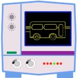

The Rockhold Company
TransitScope
Current version: 1.0
Platforms: iPhone and iPod touch
OS version: 3.0 or newer
Price: $0.99


Application Description
TransitScope displays the very-nearly-current location of every bus in the King County Metro and Sound Transit systems of the greater Seattle region. Although the location data published by Metro is not really precise enough to plan a trip this way, it is reassuring to see that your bus really is out there, on its way eventually to picking you up, and you’re not waiting in the rain for no good reason. No other iPhone application lets you observe the movements of all Metro and Sound Transit buses in this way.
TransitScope is not supported by King County Metro or Sound Transit, and is not endorsed by either agency in any way.

Features
-
See the current location of any operating bus in the Metro or Sound Transit systems (+/- about 5 minutes)
-
Hide all buses from view except the ones on the routes you really care about
-
Designate any bus as your favorite, and TransitScope will constantly keep the map updated to hold that bus in the center of the display
-
Rapidly display the current schedule web page for any route, or read the Metro and Sound Transit emergency or snow advisories
-
Sort the list of routes by route number, or by their proximity to your present location, even as you move about
-
Search the route list for route numbers
Please contact transitscope-support@rockholdco.com for TransitScope technical support.
TransitScope is fun to use, but if you are looking for a really fine iPhone application for getting around by bus in Seattle, have a look at One Bus Away, the app I wish I had written.
Copyright 2011, The Rockhold Company, LLC. All rights reserved.